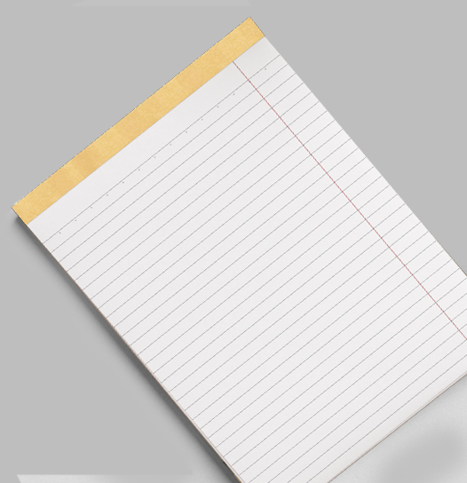
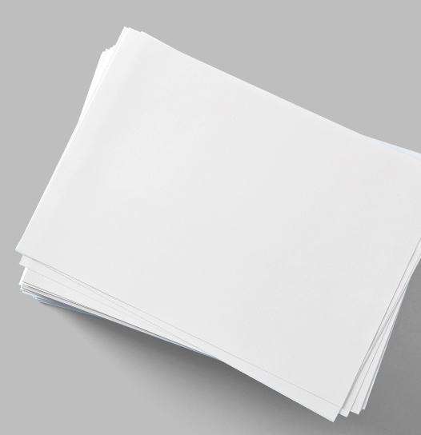
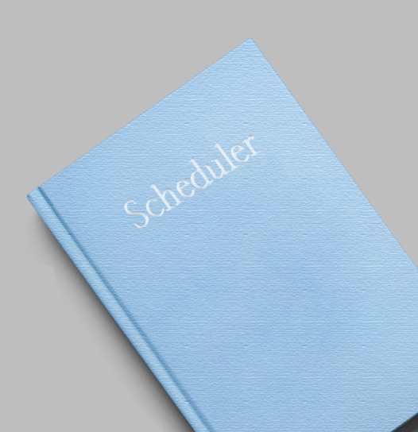
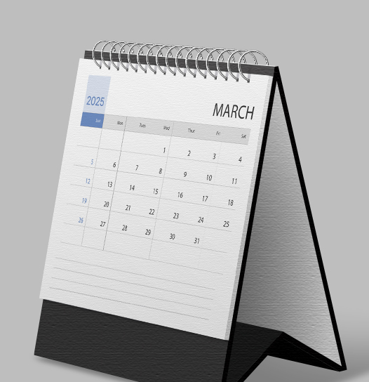
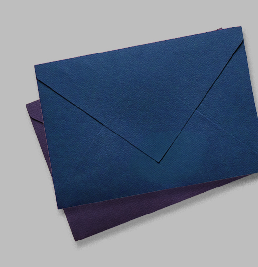

-

메모장
가장 보편적인 제본 형식으로 책의 표지와 내지에 풀을 사용하여 결합 및 고정하는 작업 방식입니다.
작업 속도가 빠르고 다른 제본 방식에 비해 비용이 저렴하고 교재, 잡지, 문제집, 등
다양한 책자에 사용되며 표지지 안쪽으로 접히는 부분(날개)을 추가할 수 있습니다. -

복사용지
스테이플러(철사 or 철심)를 이용하여 책의 표지와 내지를 엮는 작업 방식이며 다른 책들처럼 책등(세네카)은 없습니다.
인쇄물을 고정방식이라 펼침성이 우수하고 종이의 양은 48p 이내로 권장합니다.
카탈로그, 브로슈어, 보증서, 악보집 등에 사용됩니다. -

주간플래너
표지와 내지를 인쇄 및 타공한 후 타공한 구멍에 스프링을 사용해 표지와 내지를 결합하는 작업 방식입니다.
종이 두께와 상관없이 제본이 가능하며 펼침성이 우수해 페이지가 많은 잭
제본에 적합하고 스프링이 들어갈 영역(가장자리로부터 1cm)의 여백이 필요합니다. -

캘린더
일반적인 책의 제작에 사용하는 제본 방법으로 책 옆면에 본드, 실망(거즈) 등을 붙여 만드는 작업 방식입니다.
논문 제작 시 많이 사용되며, PUR제본, 양장 제본을 위한 사전 작업과정으로 이용하며
수작업으로 진행되고 메모지처럼 종이가 일부 남은용지는 깔끔하게 남아 있습니다. -

봉투
일반적인 책의 제작에 사용하는 제본 방법으로 책 옆면에 본드, 실망(거즈) 등을 붙여 만드는 작업 방식입니다.
논문 제작 시 많이 사용되며, PUR제본, 양장 제본을 위한 사전 작업과정으로 이용하며
수작업으로 진행되고 메모지처럼 종이가 일부 남은용지는 깔끔하게 남아 있습니다.